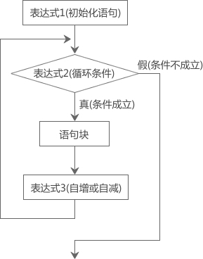
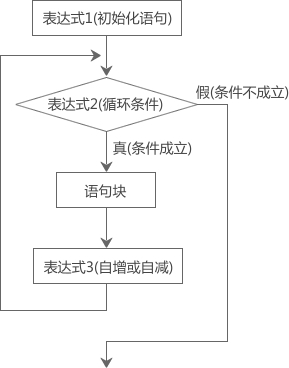

C语言for循环（for语句）详解
除了while循环，C语言中还有 for 循环，它的使用更加灵活，完全可以取代 while 循环。
上节我们使用 while 循环来计算1加到100的值，代码如下：
for 循环的一般形式为：
1) 先执行“表达式1”。
2) 再执行“表达式2”，如果它的值为真（非0），则执行循环体，否则结束循环。
3) 执行完循环体后再执行“表达式3”。
4) 重复执行步骤 2) 和 3)，直到“表达式2”的值为假，就结束循环。
上面的步骤中，2) 和 3) 是一次循环，会重复执行，for 语句的主要作用就是不断执行步骤 2) 和 3)。
“表达式1”仅在第一次循环时执行，以后都不会再执行，可以认为这是一个初始化语句。“表达式2”一般是一个关系表达式，决定了是否还要继续下次循环，称为“循环条件”。“表达式3”很多情况下是一个带有自增或自减操作的表达式，以使循环条件逐渐变得“不成立”。
for循环的执行过程可用下图表示：

我们再来分析一下“计算从1加到100的和”的代码：
5050
代码分析：
1) 执行到 for 语句时，先给 i 赋初值1，判断 i<=100 是否成立；因为此时 i=1，i<=100 成立，所以执行循环体。循环体执行结束后（sum的值为1），再计算 i++。
2) 第二次循环时，i 的值为2，i<=100 成立，继续执行循环体。循环体执行结束后（sum的值为3），再计算 i++。
3) 重复执行步骤 2)，直到第101次循环，此时 i 的值为101，i<=100 不成立，所以结束循环。
由此我们可以总结出for循环的一般形式：
1) 修改“从1加到100的和”的代码，省略“表达式1（初始化条件）”：
2) 省略了“表达式2(循环条件)”，如果不做其它处理就会成为死循环。例如：
3) 省略了“表达式3(自增或自减)”，就不会修改“表达式2(循环条件)”中的变量，这时可在循环体中加入修改变量的语句。例如：
4) 省略了“表达式1(初始化语句)”和“表达式3(自增或自减)”。例如：
5) 3个表达式可以同时省略。例如：
6) “表达式1”可以是初始化语句，也可以是其他语句。例如：
7) “表达式1”和“表达式3”可以是一个简单表达式也可以是逗号表达式。
8) “表达式2”一般是关系表达式或逻辑表达式，但也可是数值或字符，只要其值非零，就执行循环体。例如：
上节我们使用 while 循环来计算1加到100的值，代码如下：
#include <stdio.h>
int main(){
int i, sum=0;
i = 1; //语句①
while(i<=100 /*语句②*/ ){
sum+=i;
i++; //语句③
}
printf("%d\n",sum);
return 0;
}
可以看到，语句①②③被放到了不同的地方，代码结构较为松散。为了让程序更加紧凑，可以使用 for 循环来代替，如下所示：
#include <stdio.h>
int main(){
int i, sum=0;
for(i=1/*语句①*/; i<=100/*语句②*/; i++/*语句③*/){
sum+=i;
}
printf("%d\n",sum);
return 0;
}
在 for 循环中，语句①②③被集中到了一起，代码结构一目了然。for 循环的一般形式为：
for(表达式1; 表达式2; 表达式3){
语句块
}
1) 先执行“表达式1”。
2) 再执行“表达式2”，如果它的值为真（非0），则执行循环体，否则结束循环。
3) 执行完循环体后再执行“表达式3”。
4) 重复执行步骤 2) 和 3)，直到“表达式2”的值为假，就结束循环。
上面的步骤中，2) 和 3) 是一次循环，会重复执行，for 语句的主要作用就是不断执行步骤 2) 和 3)。
“表达式1”仅在第一次循环时执行，以后都不会再执行，可以认为这是一个初始化语句。“表达式2”一般是一个关系表达式，决定了是否还要继续下次循环，称为“循环条件”。“表达式3”很多情况下是一个带有自增或自减操作的表达式，以使循环条件逐渐变得“不成立”。
for循环的执行过程可用下图表示：

我们再来分析一下“计算从1加到100的和”的代码：
#include <stdio.h>
int main(){
int i, sum=0;
for(i=1; i<=100; i++){
sum+=i;
}
printf("%d\n",sum);
return 0;
}
运行结果：5050
代码分析：
1) 执行到 for 语句时，先给 i 赋初值1，判断 i<=100 是否成立；因为此时 i=1，i<=100 成立，所以执行循环体。循环体执行结束后（sum的值为1），再计算 i++。
2) 第二次循环时，i 的值为2，i<=100 成立，继续执行循环体。循环体执行结束后（sum的值为3），再计算 i++。
3) 重复执行步骤 2)，直到第101次循环，此时 i 的值为101，i<=100 不成立，所以结束循环。
由此我们可以总结出for循环的一般形式：
for(初始化语句; 循环条件; 自增或自减){
语句块
}
C语言for循环中的三个表达式
for 循环中的“表达式1（初始化条件）”、“表达式2(循环条件)”和“表达式3（自增或自减）”都是可选项，都可以省略（但分号;必须保留）。1) 修改“从1加到100的和”的代码，省略“表达式1（初始化条件）”：
int i = 1, sum = 0;
for( ; i<=100; i++){
sum+=i;
}
可以看到，将i=1移到了 for 循环的外面。2) 省略了“表达式2(循环条件)”，如果不做其它处理就会成为死循环。例如：
for(i=1; ; i++) sum=sum+i;相当于：
i=1;
while(1){
sum=sum+i;
i++;
}
所谓死循环，就是循环条件永远成立，循环会一直进行下去，永不结束。死循环对程序的危害很大，一定要避免。3) 省略了“表达式3(自增或自减)”，就不会修改“表达式2(循环条件)”中的变量，这时可在循环体中加入修改变量的语句。例如：
for( i=1; i<=100; ){
sum=sum+i;
i++;
}
4) 省略了“表达式1(初始化语句)”和“表达式3(自增或自减)”。例如：
for( ; i<=100 ; ){
sum=sum+i;
i++;
}
相当于：
while(i<=100){
sum=sum+i;
i++;
}
5) 3个表达式可以同时省略。例如：
for( ; ; ) 语句
相当于：while(1) 语句
6) “表达式1”可以是初始化语句，也可以是其他语句。例如：
for( sum=0; i<=100; i++ ) sum=sum+i;
7) “表达式1”和“表达式3”可以是一个简单表达式也可以是逗号表达式。
for( sum=0,i=1; i<=100; i++ ) sum=sum+i;或：
for( i=0,j=100; i<=100; i++,j-- ) k=i+j;
8) “表达式2”一般是关系表达式或逻辑表达式，但也可是数值或字符，只要其值非零，就执行循环体。例如：
for( i=0; (c=getchar())!='\n'; i+=c );又如：
for( ; (c=getchar())!='\n' ; )
printf("%c",c);
关注公众号「站长严长生」，在手机上阅读所有教程，随时随地都能学习。内含一款搜索神器，免费下载全网书籍和视频。

微信扫码关注公众号